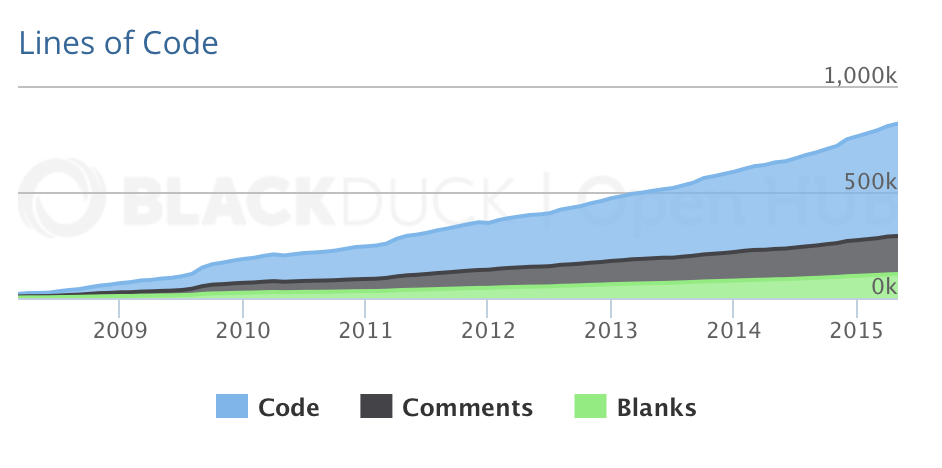

automation dogfood
How we push automation in the Gradle team
GradleSummit 2015, Santa Clara
René Gröschke
about me
- rene gröschke
- gradle engineer
- living in berlin
- no pets
about this talk
- providing some insights
- inspires
- impress
about the gradle project
- ~ 12 distributed full time engineers
- frequent releases (aim is 6 - 8 weeks)
- ~15k unit + integration tests
- ~ 60 modules
about the gradle project II
about the gradle project III

automation is
- critical for high perfoming teams
- everyones responsibility
- in continuous development
Development
IDE setup
- automated import setup
- prerequisite is java
Demo
setup workspace
Testing
- lot of test nerds on board
- we spock
Integration Tests
- must be simple to write
Demo
writing integration tests
Integration Tests
test modes
- embedded (very fast, easy to debug)
- forking (slower, but more realistic)
- daemon (stress test for the daemon)
- parallel (stress test for parallel feature)
Cross Version Testing
testing against different versions of things
- against different framework versions
- junit
- groovy
- run against latest version locally
- test full suite of versions on CI
Demo
Cross Version Testing
Distribution Testing
Performance Testing
TODO show results on teamcity
Testable Documentation
- samples are tested
- gradle snippets in javadoc
- java snippets in javadoc
Documentation
- Userguide
- DSL reference
- API reference
- Release notes
Code Quality
- sanity check build
- also applied on build logic
- no code coverage
Build pipeline
- quality gates
- implemented with teamcity
- identical pipeline for master and release
promotion
- one click release
- dedicated job with additional logic
- smoke tests
- announcement (partially automated)
infrastructure
- 20 build agents
- linux and windows build machines
- managed via salt (http://saltstack.com)
forum integration
- forum based on discourse (http://discourse.org)
- automation based on discourse plugins
- still in progress
Links and pointers
- Gradle Build server Portal: https://builds.gradle.org
Q&A
Many Thanks!
| @breskeby | |
| github.com/breskeby | |
| rene@gradle.com | |